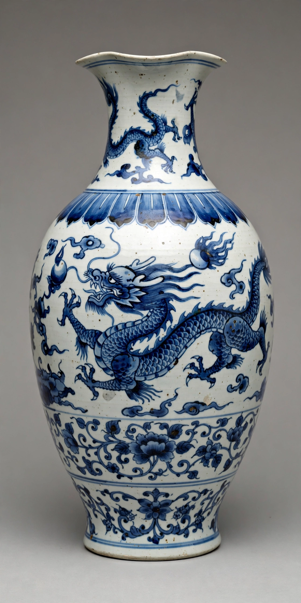

Yuan dynasty

Blue-and-white porcelain vase of the Yuan dynasty
The Yuan dynasty (1271–1368) was the Mongol-led imperial dynasty of China founded by Kublai Khan, grandson of Genghis Khan. It was the first dynasty to rule the whole of China from a foreign conquest elite, and formed one part — the khanate of the Great Khan — of the wider Mongol Empire. Yuan rule unified China after three centuries of division, made Beijing (Khanbaliq/Dadu) the enduring capital, presided over flourishing drama, painting and blue-and-white porcelain, and maintained busy overland and maritime trade across Eurasia. It fell to Zhu Yuanzhang, who founded the Ming dynasty in 1368.
Mongol China
Kublai proclaimed the dynasty's Chinese name in 1271 before completing the conquest of the Song in 1279. Yuan government combined Mongol military organisation with Chinese bureaucracy, promoted agriculture and relay-post networks, issued paper currency on a large scale, and patronised Tibetan Buddhism and astronomy (Guo Shoujing's calendar of 1280 was centuries ahead in accuracy). Society was legally stratified, with southern Chinese (Nanren) at the bottom and largely excluded from high office; the civil examinations were suspended for decades.
Decline and fall
From the 1340s, Yellow River floods, paper-money inflation, plague and court struggles fed the Red Turban rebellions. Zhu Yuanzhang, a peasant-turned-rebel, took Nanjing, marched on Dadu in 1368 and drove the Yuan court back to the Mongolian steppe, where it continued as the Northern Yuan. Despite its brevity, the Yuan fixed China's capital, provincial map and place in a Eurasian world system.